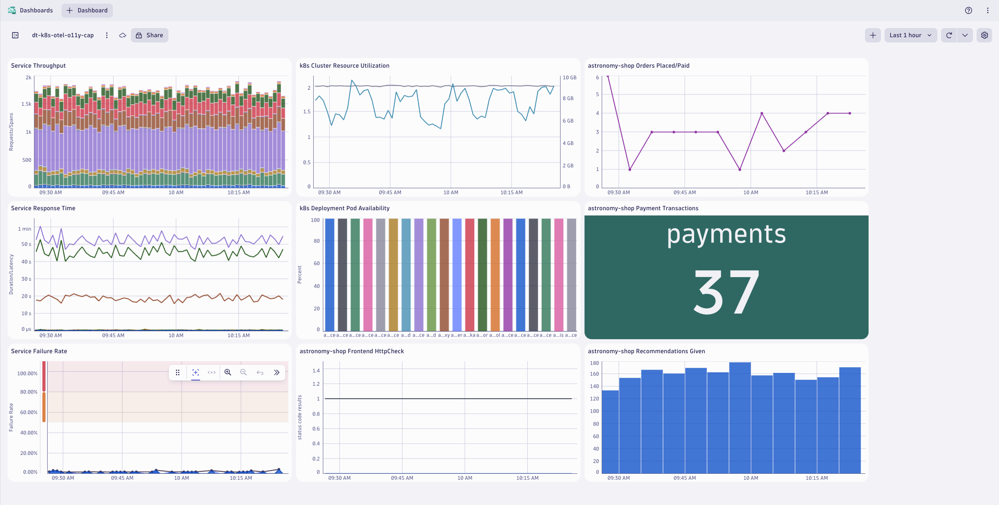
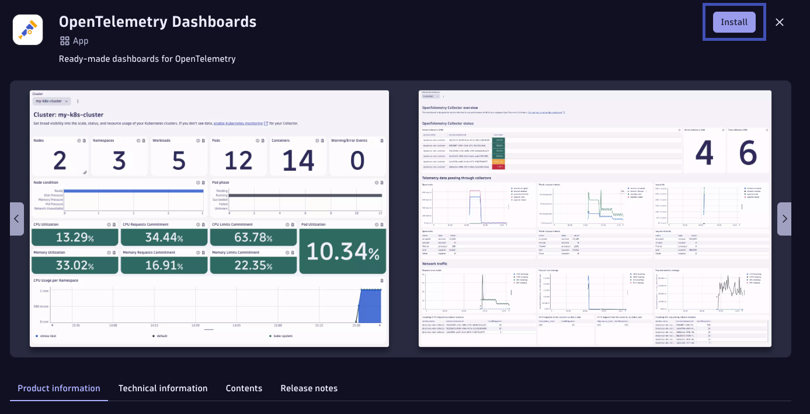
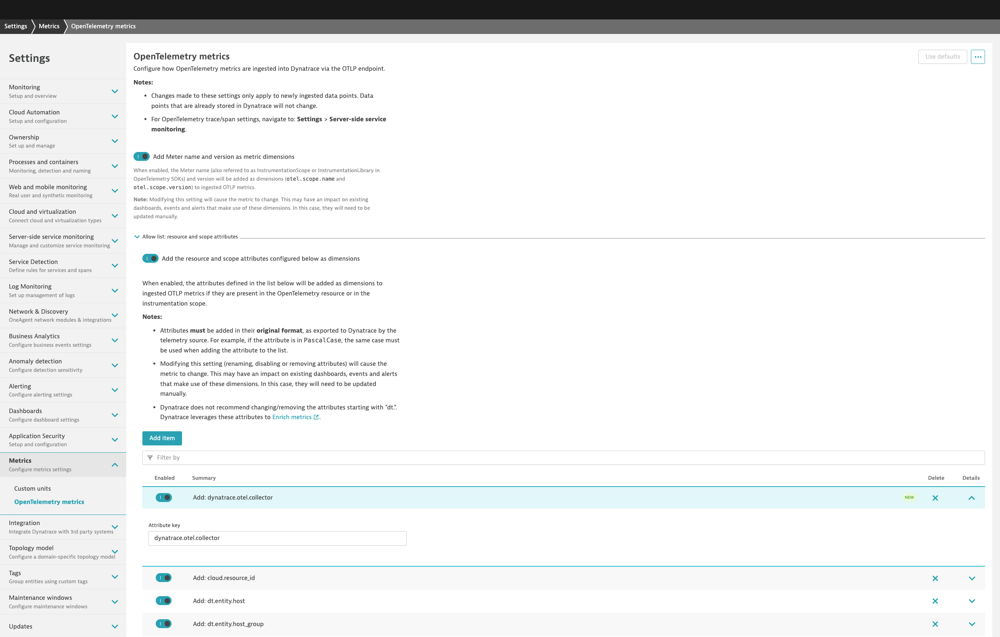
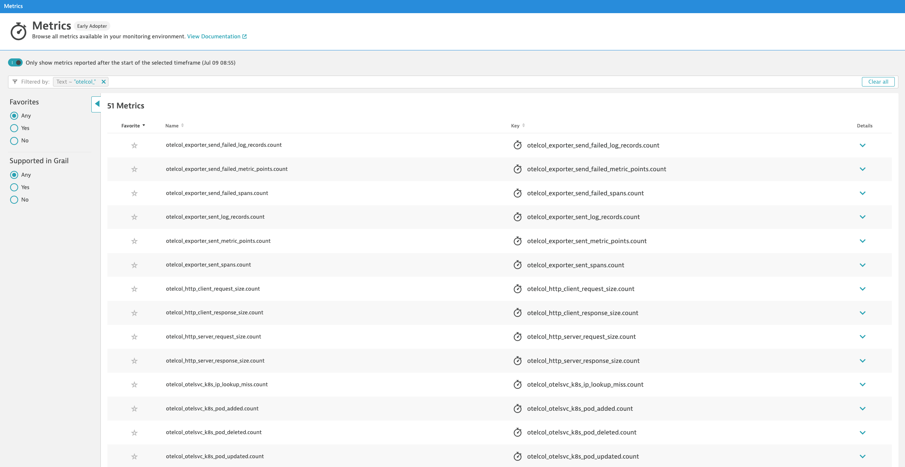
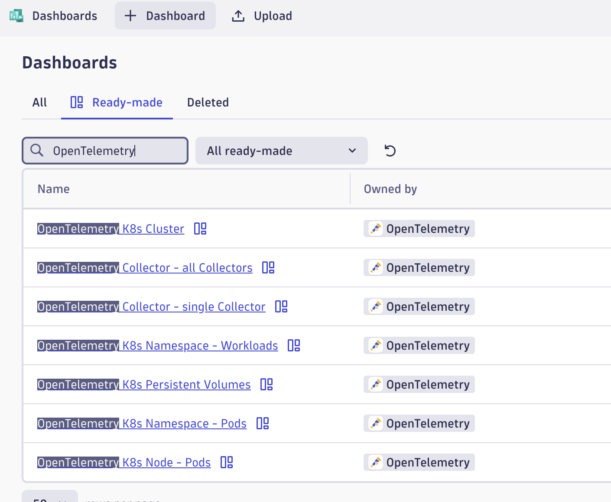

OpenTelemetry Capstone#
Capstone Module
What is a Capstone? A hands-on, culminating learning experience where participants apply the knowledge and skills they've gained throughout a course or program to solve a real-world problem, create a project, or present a comprehensive solution.
In this lab module we'll utilize multiple OpenTelemetry Collectors to collect application traces/spans, log records, and metric data points generated by OpenTelemetry, from a Kubernetes cluster and ship them to Dynatrace. This is a capstone lab that utilizes the concepts of the previous Kubernetes OpenTelemetry lab modules.
Lab tasks:
- Deploy 2 OpenTelemetry Collectors
- Configure OpenTelemetry Collector service pipeline for data enrichment
- Analyze metrics, traces, and logs in Dynatrace
- Observe OpenTelemetry Collector health in Dynatrace
Prerequisites#
Import Dashboard into Dynatrace

astronomy-shop dashboardAdd OpenTelemetry Dashboards from Hub
Locate the OpenTelemetry Dashboards App in the Hub. Install the App to have OpenTelemetry Collector self-monitoring and Kubernetes monitoring dashboards added to your environment.

Define workshop user variables In your Github Codespaces Terminal set the environment variables:
Sprint Environment
Are you using a Sprint environment for your Dynatrace tenant? If so, then use export DT_ENDPOINT=https://{your-environment-id}.sprint.dynatracelabs.com/api/v2/otlp instead of the live version below.
export DT_ENDPOINT=https://{your-environment-id}.live.dynatrace.com/api/v2/otlp
export DT_API_TOKEN={your-api-token}
export NAME=<INITIALS>-k8s-otel-o11y
Move into the capstone module directory
Command:
Clean Up Previous Deployments
Delete dynatrace namespace and all previous deployments
Command:
OpenTelemetry Operator and Role Based Access#
Deploy OpenTelemetry Operator
Create dynatrace namespace
Command:
Sample output:namespace/dynatrace created
Create dynatrace-otelcol-dt-api-credentials secret
The secret holds the API endpoint and API token that OpenTelemetry data will be sent to.
Command:
kubectl create secret generic dynatrace-otelcol-dt-api-credentials --from-literal=DT_ENDPOINT=$DT_ENDPOINT --from-literal=DT_API_TOKEN=$DT_API_TOKEN -n dynatrace
secret/dynatrace-otelcol-dt-api-credentials created
Deploy cert-manager, pre-requisite for opentelemetry-operator
Command:
Sample output:namespace/cert-manager created\ customresourcedefinition.apiextensions.k8s.io/certificaterequests.cert-manager.io created\ customresourcedefinition.apiextensions.k8s.io/certificates.cert-manager.io created\ ...\ validatingwebhookconfiguration.admissionregistration.k8s.io/cert-manager-webhook created
Wait 30-60 seconds for cert-manager to finish initializing before continuing.
Deploy opentelemetry-operator
The OpenTelemetry Operator will deploy and manage the custom resource OpenTelemetryCollector deployed on the cluster.
Command:
Sample output:namespace/opentelemetry-operator-system created\ customresourcedefinition.apiextensions.k8s.io/instrumentations.opentelemetry.io created\ customresourcedefinition.apiextensions.k8s.io/opampbridges.opentelemetry.io created\ ...\ validatingwebhookconfiguration.admissionregistration.k8s.io/opentelemetry-operator-validating-webhook-configuration configured
Wait 30-60 seconds for opentelemetry-operator-controller-manager to finish initializing before continuing.
Validate that the OpenTelemetry Operator components are running.
Command:
Sample output:
| NAME | READY | STATUS | RESTARTS | AGE |
|---|---|---|---|---|
| opentelemetry-operator-controller-manager-5d746dbd64-rf9st | 2/2 | Running | 0 | 1m |
Create clusterrole with read access to Kubernetes objects
---
apiVersion: rbac.authorization.k8s.io/v1
kind: ClusterRole
metadata:
name: otel-collector-k8s-clusterrole
rules:
- apiGroups: ['']
resources: ['events', 'namespaces', 'namespaces/status', 'nodes', 'nodes/spec', 'nodes/stats', 'nodes/proxy', 'pods', 'pods/status', 'replicationcontrollers', 'replicationcontrollers/status', 'resourcequotas', 'services']
verbs: ['get', 'list', 'watch']
- apiGroups: ['apps']
resources: ['daemonsets', 'deployments', 'replicasets', 'statefulsets']
verbs: ['get', 'list', 'watch']
- apiGroups: ['extensions']
resources: ['daemonsets', 'deployments', 'replicasets']
verbs: ['get', 'list', 'watch']
- apiGroups: ['batch']
resources: ['jobs', 'cronjobs']
verbs: ['get', 'list', 'watch']
- apiGroups: ['autoscaling']
resources: ['horizontalpodautoscalers']
verbs: ['get', 'list', 'watch']
clusterrole.rbac.authorization.k8s.io/otel-collector-k8s-clusterrole created
Create clusterrolebinding for OpenTelemetry Collector service accounts
---
apiVersion: rbac.authorization.k8s.io/v1
kind: ClusterRoleBinding
metadata:
name: otel-collector-k8s-clusterrole-crb
subjects:
- kind: ServiceAccount
name: dynatrace-deployment-collector
namespace: dynatrace
- kind: ServiceAccount
name: dynatrace-daemonset-collector
namespace: dynatrace
roleRef:
kind: ClusterRole
name: otel-collector-k8s-clusterrole
apiGroup: rbac.authorization.k8s.io
clusterrolebinding.rbac.authorization.k8s.io/otel-collector-k8s-clusterrole-crb created
Dynatrace Deployment Collector#
OpenTelemetry Collector - Dynatrace Distro (Deployment)
Receivers:
otlp, prometheus, k8s_cluster, k8sobjects
| MODULE | DT DEPLOY | DT DAEMON |
|---|---|---|
| otlp | - [x] | - [ ] |
| prometheus | - [x] | - [x] |
| filelog | - [ ] | - [x] |
| kubeletstats | - [ ] | - [x] |
| k8s_cluster | - [x] | - [ ] |
| k8sobjects | - [x] | - [ ] |
Deploy OpenTelemetry Collector CRD
---
apiVersion: opentelemetry.io/v1beta1
kind: OpenTelemetryCollector
metadata:
name: dynatrace-deployment
namespace: dynatrace
spec:
envFrom:
- secretRef:
name: dynatrace-otelcol-dt-api-credentials
mode: "deployment"
image: "ghcr.io/dynatrace/dynatrace-otel-collector/dynatrace-otel-collector:latest"
opentelemetrycollector.opentelemetry.io/dynatrace-deployment created
Validate running pod(s)
Command:
Sample output:
| NAME | READY | STATUS | RESTARTS | AGE |
|---|---|---|---|---|
| dynatrace-deployment-collector-796546fbd6-kqflf | 1/1 | Running | 0 | 1m |
Dynatrace Daemonset Collector#
OpenTelemetry Collector - Dynatrace Distro (Daemonset)
Receivers:
filelog, prometheus, kubeletstats
| MODULE | DT DEPLOY | DT DAEMON |
|---|---|---|
| otlp | - [x] | - [ ] |
| prometheus | - [x] | - [x] |
| filelog | - [ ] | - [x] |
| kubeletstats | - [ ] | - [x] |
| k8s_cluster | - [x] | - [ ] |
| k8sobjects | - [x] | - [ ] |
Deploy OpenTelemetry Collector CRD
---
apiVersion: opentelemetry.io/v1beta1
kind: OpenTelemetryCollector
metadata:
name: dynatrace-daemonset
namespace: dynatrace
spec:
envFrom:
- secretRef:
name: dynatrace-otelcol-dt-api-credentials
mode: "daemonset"
image: "ghcr.io/dynatrace/dynatrace-otel-collector/dynatrace-otel-collector:latest"
opentelemetrycollector.opentelemetry.io/dynatrace-daemonset created
Validate running pod(s)
Command:
Sample output:
| NAME | READY | STATUS | RESTARTS | AGE |
|---|---|---|---|---|
| dynatrace-daemonset-collector-h69pz | 1/1 | Running | 0 | 1m |
Configure Astronomy Shop OTLP Export#
config:
receivers:
otlp:
protocols:
http:
# Since this collector needs to receive data from the web, enable cors for all origins
# `allowed_origins` can be refined for your deployment domain
cors:
allowed_origins:
- "http://*"
- "https://*"
httpcheck/frontendproxy:
targets:
- endpoint: 'http://{{ include "otel-demo.name" . }}-frontendproxy:8080'
exporters:
# Dynatrace OTel Collector
otlphttp/dynatrace:
endpoint: http://dynatrace-deployment-collector.dynatrace.svc.cluster.local:4318
processors:
resource:
attributes:
- key: service.instance.id
from_attribute: k8s.pod.uid
action: insert
connectors:
spanmetrics: {}
service:
pipelines:
traces:
receivers: [otlp]
processors: [memory_limiter, resource, batch]
exporters: [spanmetrics, otlphttp/dynatrace]
metrics:
receivers: [httpcheck/frontendproxy, otlp, spanmetrics]
processors: [memory_limiter, resource, batch]
exporters: [otlphttp/dynatrace]
logs:
processors: [memory_limiter, resource, batch]
exporters: [otlphttp/dynatrace]
Export OpenTelemetry data from astronomy-shop to OpenTelemetry Collector - Dynatrace Distro (Deployment)
Customize astronomy-shop helm values
default:
# List of environment variables applied to all components
env:
- name: OTEL_SERVICE_NAME
valueFrom:
fieldRef:
apiVersion: v1
fieldPath: "metadata.labels['app.kubernetes.io/component']"
- name: OTEL_COLLECTOR_NAME
value: '{{ include "otel-demo.name" . }}-otelcol'
- name: OTEL_EXPORTER_OTLP_METRICS_TEMPORALITY_PREFERENCE
value: cumulative
- name: OTEL_RESOURCE_ATTRIBUTES
value: 'service.name=$(OTEL_SERVICE_NAME),service.namespace=NAME_TO_REPLACE,service.version={{ .Chart.AppVersion }}'
service.namespace=NAME_TO_REPLACE\ service.namespace=INITIALS-k8s-otel-o11y
Command:
sed "s,NAME_TO_REPLACE,$NAME," astronomy-shop/collector-values.yaml > astronomy-shop/sed/collector-values.yaml
Update astronomy-shop OpenTelemetry Collector export endpoint via helm
Command:
helm upgrade astronomy-shop open-telemetry/opentelemetry-demo --values astronomy-shop/sed/collector-values.yaml --namespace astronomy-shop --version "0.31.0"
NAME: astronomy-shop\ LAST DEPLOYED: Thu Jun 27 20:58:38 2024\ NAMESPACE: astronomy-shop\ STATUS: deployed\ REVISION: 2
Validate and Analyze Data in Dynatrace#
Analyze metrics, traces, and logs in Dynatrace dashboard
OpenTelemetry Collector Health#
Observe OpenTelemetry Collector health in Dynatrace#
- Add
dynatrace.otel.collectorto Dynatrace's metric attribute allow list - Enable OpenTelemetry Collector self-monitoring telemetry
- View OpenTelemetry Collector self-mon health metrics in Dynatrace
Add dynatrace.otel.collector to Dynatrace's metric attribute allow list
By default, the metric attribute dynatrace.otel.collector is dropped by Dynatrace. Add it to the allow list in your Dynatrace tenant:

Enable OpenTelemetry Collector self-monitoring telemetry
Add telemetry service to Collector config:
service:
telemetry:
logs:
level: "info"
encoding: "json"
metrics:
level: "detailed"
# set up OTLP exporter to self OTLP receiver
readers:
- periodic:
interval: 10000
timeout: 5000
exporter:
otlp:
protocol: http/protobuf
temporality_preference: delta
endpoint: "http://${env:MY_POD_IP}:4318/v1/metrics"
For more details and the latest information, see the Dynatrace Documentation for Collector self-monitoring.
View OpenTelemetry Collector self-mon health metrics in Dynatrace
OpenTelemetry Collector self-mon metrics have the otelcol_ prefix and can be found in the Dynatrace metric browser:

You can also query the metric series (metric key + dimensions) using DQL:
Use the ready-made dashboards from OpenTelemetry Dashboards to view and analyze the OpenTelemetry Collector health.

Wrap Up#
What You Learned Today#
By completing this lab, you've successfully deployed the OpenTelemetry Collector to collect metrics, traces, and logs from Kubernetes and ship them to Dynatrace for analysis.
- The Dynatrace Distro of OpenTelemetry Collector includes supported modules needed to ship telemetry to Dynatrace
- The
otlpreceiver receives metrics, traces, and logs from OpenTelemetry exporters via gRPC/HTTP - The
filelogreceiver scrapes logs from the Node filesystem and parses the contents - The
prometheusreceiver scrapes metric data exposed by Pod Prometheus endpoints - The
kubeletstatsreceiver scrapes metrics from the local kubelet on the Node - The
k8s_clusterreceiver queries the Kubernetes cluster API to retrieve metrics - The
k8sobjectsreceiver watches for Kubernetes events (and other resources) on the cluster
- The
- Dynatrace allows you to perform powerful queries and analysis of the telemetry data
- Observing the health of the OpenTelemetry Collectors and data pipeline is critical
- The OpenTelemetry Collector exposes self-monitoring metrics and emits logs
Continue#
Now that the lab has been completed, let's summarize what we have learned and clean up our Codespaces instance.